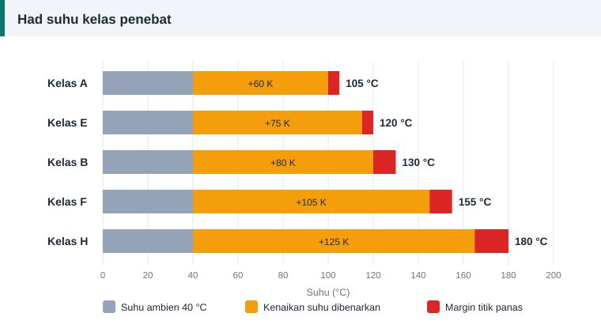

Dawai dan penebat
Kelas Penebat Motor A, E, B, F dan H Dijelaskan
Satu huruf pada plat nama menentukan berapa panas belitan boleh dibiarkan sebelum penebatnya mula rosak. Huruf itu ialah kelas penebat.


Jadual kelas penebat
| Kelas | Suhu maksimum (°C) | Kenaikan suhu dibenarkan (K) | Margin titik panas (K) |
|---|---|---|---|
| A | 105 | 60 | 5 |
| E | 120 | 75 | 5 |
| B | 130 | 80 | 10 |
| F | 155 | 105 | 10 |
| H | 180 | 125 | 15 |
Nilai kenaikan suhu berdasarkan suhu ambien rujukan 40 °C dan pengukuran dengan kaedah rintangan.
Cara membaca jadual
Ambil kelas F sebagai contoh. Suhu ambien 40 °C, ditambah kenaikan purata belitan 105 K, ditambah margin 10 K untuk titik paling panas yang tidak dapat diukur terus, memberi 155 °C. Itulah suhu tertinggi yang boleh ditanggung oleh bahan kelas F secara berterusan.
Peraturan sepuluh darjah
Petua yang diterima umum: setiap 10 °C melebihi had kelas boleh memendekkan hayat penebat kira-kira separuh. Sebaliknya, motor yang berjalan lebih sejuk daripada hadnya bertahan lebih lama. Sebab itu beban lampau yang kecil tetapi berterusan lebih merosakkan daripada yang disangka.
Kelas F dengan kenaikan kelas B
Banyak motor moden menggunakan bahan kelas F tetapi direka supaya kenaikan suhunya kekal dalam had kelas B, iaitu 80 K. Baki 25 K itu menjadi margin keselamatan terhadap voltan tidak seimbang, ambien panas dan beban lampau sekejap.
Memilih bahan semasa lilitan semula
- Jangan turun kelas. Sistem penebat hanya sekuat komponennya yang paling lemah. Dawai, pelapik alur, pemisah, sarung, tali dan varnis mesti sekurang-kurangnya sama kelas.
- Naik kelas dibenarkan dan sering digalakkan. Dawai berenamel kelas 155 dan 180 mudah diperoleh.
- Kelas lebih tinggi tidak menaikkan kuasa motor. Kuasa turut dihadkan oleh teras, galas dan penyejukan.
Senarai bahan yang terlibat ada dalam penebat alur, baji dan varnis.
Mengukur suhu belitan dengan kaedah rintangan
Rintangan kuprum naik dengan suhu, jadi belitan boleh menjadi termometernya sendiri.
T2 = (R2 ÷ R1) × (235 + T1) − 235
Ukur rintangan belitan semasa sejuk, R1, pada suhu T1. Jalankan motor dengan beban sehingga suhunya stabil, matikan dan ukur semula dengan segera untuk mendapat R2.
Contoh: R1 = 8.58 Ω pada 30 °C dan R2 = 10.6 Ω. T2 = (10.6 ÷ 8.58) × 265 − 235 = 92 °C. Kenaikan suhu ialah 92 − 30 = 62 K, selesa di bawah had kelas B.
Tanda penebat sudah terlebih panas
- Varnis bertukar daripada kuning keemasan kepada coklat gelap atau hitam.
- Kertas pelapik rapuh dan mudah patah apabila dilentur.
- Enamel dawai mengelupas apabila digosok dengan kuku.
- Bacaan rintangan penebatan menurun dari tahun ke tahun.
Rujukan dan bacaan lanjut
Artikel berkaitan
Penebat Alur, Baji dan Varnis: Bahan Penebatan Belitan
Dawai kuprum hanya separuh cerita. Pelapik alur, pemisah fasa, baji, sarung dan varnis melindungi belitan daripada litar pintas, getaran serta lembapan sepanjang hayat motor.
Mengapa Belitan Motor Terbakar: Lapan Punca dan Cara Mengenalnya
Belitan yang hangus menyimpan petunjuk tentang puncanya. Baca corak kerosakan untuk membezakan beban lampau, hilang fasa dan litar pintas supaya motor tidak terbakar semula.
Ujian Megger: Cara Mengukur Rintangan Penebatan Motor
Ujian rintangan penebatan mendedahkan belitan lembap, kotor atau rosak sebelum motor dihidupkan. Ikuti prosedur, voltan ujian dan nilai minimum yang disyorkan piawaian IEEE 43.